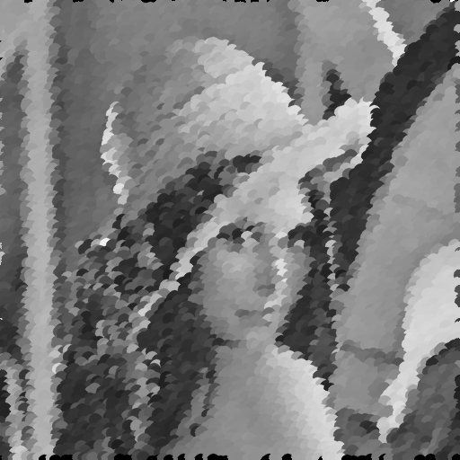
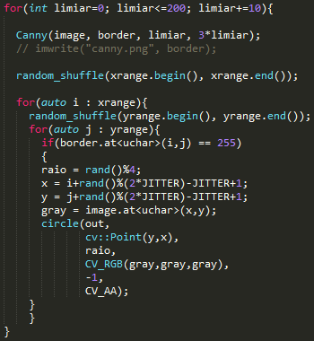
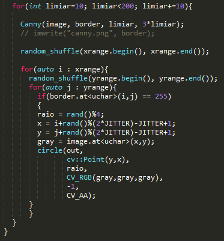

Soluções para os problemas propostos pelo professor Agostinho Brito Jr na disciplina Processamento Digital de Imagens semestre 2016.1
Nessa prática foi pedido para gerar uma imagem que imite a técnica pontilhista. O Pontilhismo é uma técnica de pintura e desenho em que as imagens são definidas por pequenas manchas ou pontos. Para ajudar reprodução dessa técnica foi utilizado o filtro de canny. Esse filtro faz a detecção das bordas de uma imagem, e é a partir da posição dessas bordas que preencho a imagem de saida com pontos. O filtro de canny trabalha com dois limiares na proporção de 1 pra 3. Quanto menor o limiar, mais bordas são capturadas. Abaixo vemos um exemplo da detecção de bordas do algoritmo com o limiar 60.
Para realizar o pontilhismo foi criado um laço de repetição que faz a variação do limiar do filtro de canny partindo de 0 até 200 num passo 10. Para cada iteração canny é recalculado e os circulos são escritos na imagem de saida. Vale salientar que antes de executar o laço a imagem de entrada foi totalmente copiada, sem modificações, para a imagem de saida, para que nos locais onde não for detectado borda não ficarmos com espaços em branco, mas sim preenchidos com a imagem original. Os circulos que são acrescentados á imagem tem tamanho randomico e atingem no maximo um raio de 4 pixels, valor que obtive melhor resultado para essa imagem. A textura dos circulos também coincide com a da imagem original.

